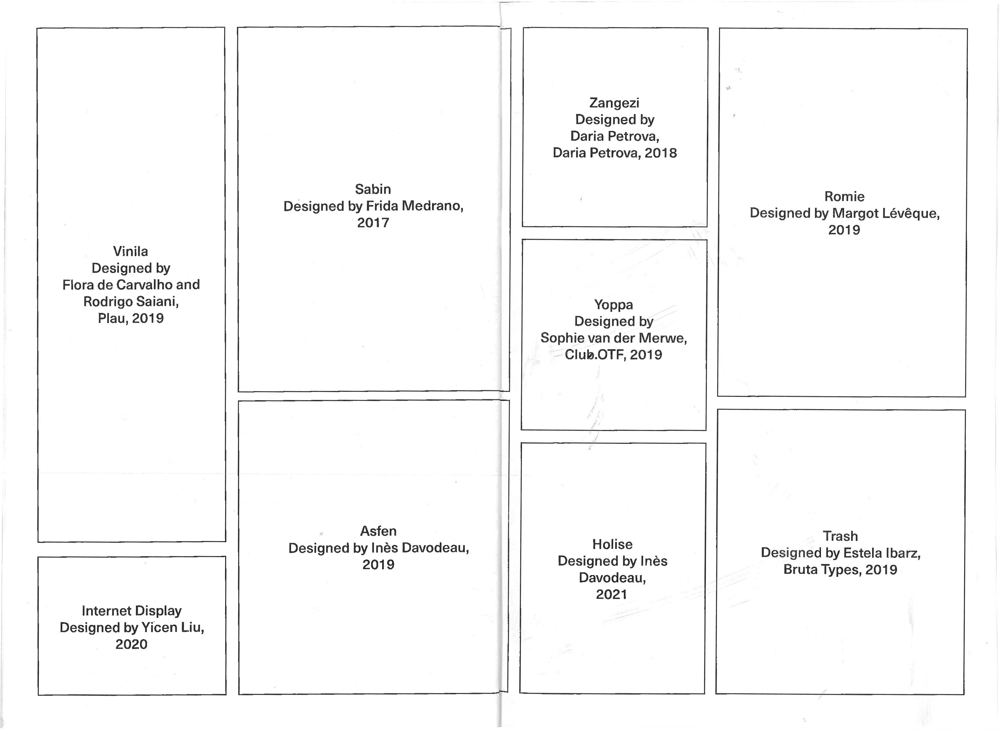
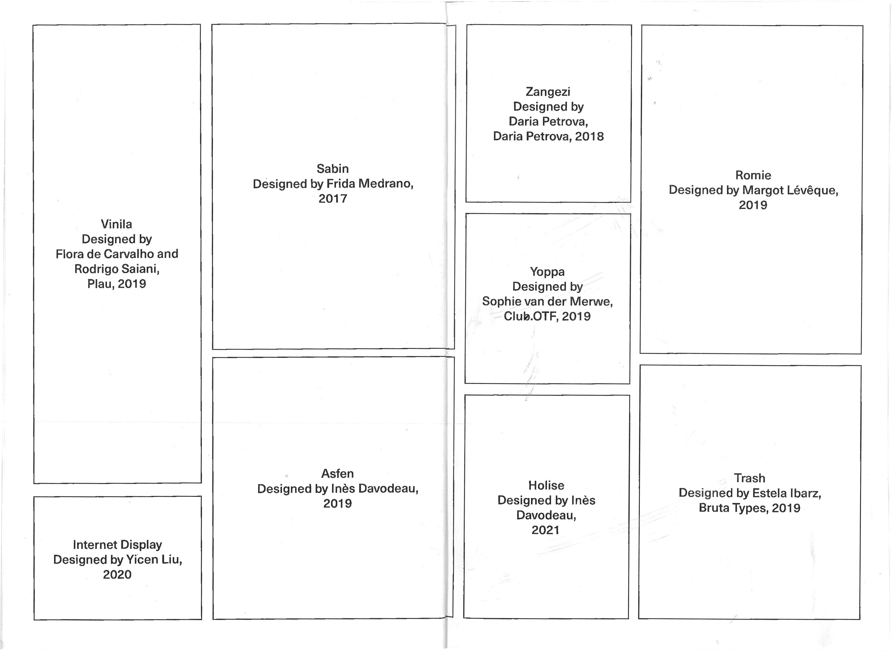
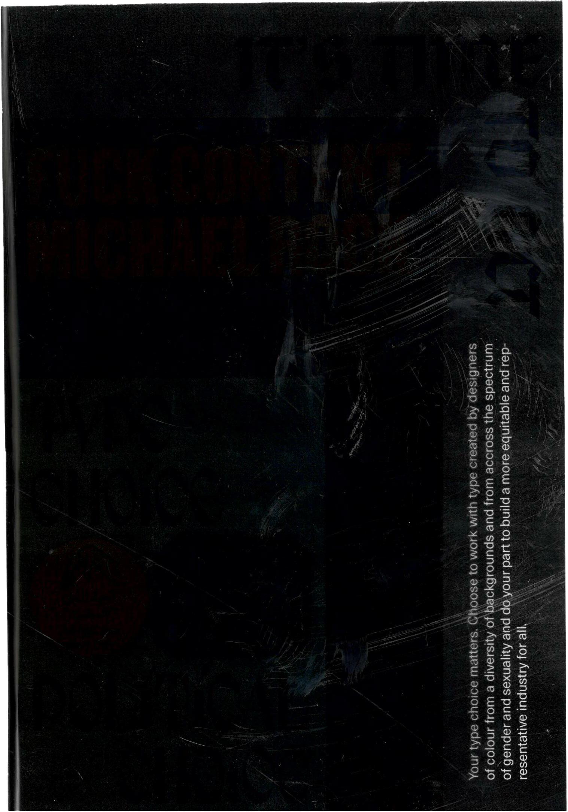
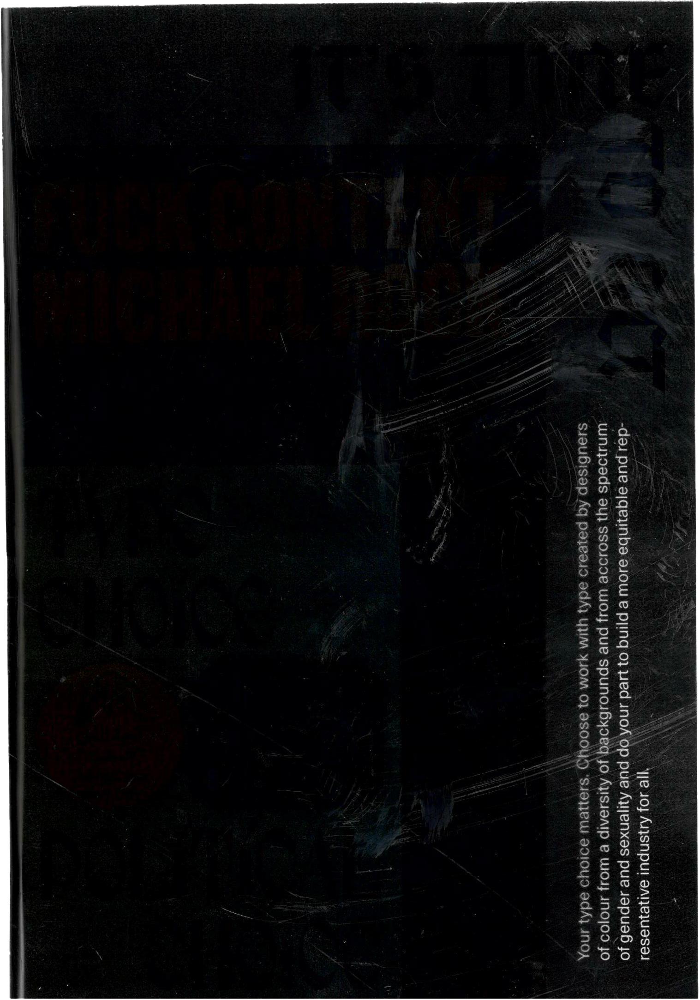

Type Choice Matters
Compiled Manifesto
The project was in response to a brief to curate a manifesto that outlines
my core beliefs about the field of communication and graphic design.
To me, championing designers from a range of identities and life experiences
is fundamental to seeing our industry grow and flourish. Consequently,
Type Choice Matters is a collection of texts that underscore the
politics of the choices designers make in the day-to-day of their jobs,
and emphasizes the importance of making conscious ones. The texts include
Type Choice Political Choice by Agyei Archer, Fuck Content
by Michael Rock, and It's Time To Act by the Alphabettes.
The book consists of three sections with varying dimensions, and
a translucent cover printed on acetate that unfolds into a poster.
Typefaces:
Kik — Xin
Neue Haas Unica — Monotype UK
VTC Martin — Vocal Type
Freight Text Pro — Joshua Darden
Fleisch — Delve Fonts


 

 
